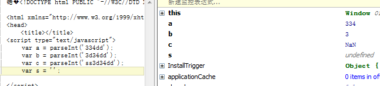
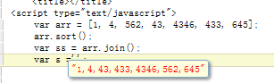
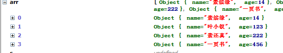

前言
因为公司要进行前端团队建设，这一培训任务就落到了我手里，有时候会望着后端几个工作5年甚至10年的同事，心里还是有点虚的，虚完事情还是要做的，所以首先需要先复习复习，后面再根据最近的博客形成PPT吧，所以“本老师”来了。。。
这次培训的内容由CSS、javascript、jquery组成，按道理说该先写CSS的，但是我CSS很水已经是默认的标准了，所以还是先看看js吧，希望我js不这样水
javascript基本数据类型
这次培训对象还是会有新人，所以还是需要介绍基本数据类型的，话说我现在也不能完全说出来呢。。。
javascript数据类型分为两种：原始类型与对象类型
原始类型：
数字、字符串、布尔值、null、undefined
其中null与undefined代表了各自特殊类型的唯一成员
对象类型：
所谓对象类型便是属性的集合，每个属性都是由键值对组成
普通的对象时无序键值对，有序的键值对便是我们的数组了
还有一个特殊的对象便是函数
函数是具有与他相关联的可执行代码的对象，通过调用函数运行可执行代码并返回结果
若是使用new操作符来新建一个对象我们便称之为构造函数
每个构造函数定义了一个类——由构造函数初始化对象组合的集合（可看做对象类型的子类型）
数组是类（Array）
函数式类（Function）
日期是类（Date）
正则式类（RegExp）
类与函数贯穿js始终
数字
javascript是不区分整数与浮点数的，所有数均用浮点数表示
Math
现在我们来认识一位与数字非常有关系的对象Math，这个家伙可以干很多事情呢！
Math.round(0.6) 四舍五入
Math.random() 生成一个大于0小于1的伪随机数
运算溢出
当js运算溢出时不会报错，会使用无穷大infinity与无穷小-infinity表示；
若是出现没有意义的运算便会返回NaN，NaN的判断无论如何都是false（他与自身也不相等），所以判断他要使用isNaN()函数
parseInt与parseFloat
parseInt(string, radix)
radix，表示转换的基数，也就是我们常说的2进制、8进制、10进制、16进制等。范围从2~36，但我们在JS中一般调用该方法时，基本都是以10为基数进行转换的。
如果该参数小于 2 或者大于 36，则 parseInt() 将返回 NaN。
parseInt这个函数非常有用的，可以将一个字符串返回为整数
<script type="text/javascript"> var a = parseInt('334dd'); var b = parseInt('3d34dd'); var c = parseInt('ss3d34dd'); s = ''; </script>

字符串
字符串是由一组16位值组成的不可变有序序列，每个字符通常来源于Unicode字符集。
字符串一旦第一便不会改变，我们使用函数操作他也只是返回了新的字符串，下面介绍下与字符串有关的函数
var s = 'hellow world';
s.charAt(0);//h
s.charAt(s.length - 1);//d
s.substring(1, 4);ell第2到第四的字符
s.slice(1, 4);//同上
s.slice(-3);//rld，最后三个字符
s.indexOf('l');//2首次出现l的位置
s.lastIndexOf('l');//最后一次出现l的位置，10
s.indexOf('l', 3);//3在在位置3以后首次出现l的位置
s.split(', ');//使用", "分割将字符串变为数组，非常有用的家伙
s.replace('h', 'H');//全文字替换，支持正则表达式
s.toUpperCase();//转换为大写
布尔值
布尔值只有true与false两个，此处略去200字。。。
null和undefined
null在js中式用来描述“空值”的，使用typeof null 会返回对象（object），也就是说null为特殊的对象，但是该对象只有他一个人；
undefined表示值的空缺，表示变量没有被初始化，比如
var a，这种情况a便是undefined，若是我们定义一个对象，但他开始没值便可设置其为null。
包装对象
我们前面看到s为字符串，却可以执行很多函数，这简直就是对象的行为嘛，原因是他确实变成对象了。。。
javascript通过new String(s)，将字符串转换为对象，所以s便拥有了方法，一旦函数操作结束新建的对象便会被销毁
数字与bool值是一样的包装的。
类型转换
javascript的类型非常灵活，类型的转换有时候便会自动发生：
10 + ' sss' //=> 10 sss '7' * '4'/28 1 - 'd'//NaN 1 - 'd' + 's'//NaNs(注意啦)
对象字面量
对象字面量真是js中的好东西，对象字面量提供了一种方便创建新对象值的表示法：
var obj = { 'name': '叶小钗', age: '秘密', sayName: function () : alert(this.name); }};
做后端开发的同学对hashtable一定不陌生，对象字面量便是标准的键值对。
我们可以通过new Object的方式创建对象，但是这里还是推荐以上写法。
我们通过.或者[]的方式访问对象：
obj.name obj['name'] 若是要判断对象是否包含某个属性，使用： obj.hasOwnProperty('age'
序列化对象（Json）
我们若是序列化对象字面量，他便会变成一个一般的字符串，我们亲切的称呼他为json串！
json串是个神奇的家伙，他可以将数据表中二维的数据转化为一个字符串，传到前端后，他又会还原为二维，
所以我们数据表中某个普通的字段，搞不好包含的就是一个二维对象！
数组
js中的数组无比的灵活！！！因为他可以随意的装东西，而且他的长度便会也是非常灵活的。
初始化
var arr = []; var arr = new Array();
length
数组的长度是个神奇的东东：
<script type="text/javascript"> [ ].length; //0 ['a', 1, function () { } ].length; //3 var arr = [1, 2, 3, 4, 5]; //5个元素 arr.length = 3; //arr = [1, 2, 3] arr.length = 0; //arr = [] arr.length = 6; //相当于arr = new Array(6) </script>
动态添加数组项
var arr = []; arr[arr.length] = 1; ... arr.push(1); ...
数组遍历这些便不说了。。。我们来看看数组的函数
join
该函数与字符串的spilt对应，可以将一个数转换为字符串，很不错的家伙
var arr = [1, 2, 3]; arr.join();//'1,2,3' arr.join(';');//'1;2;3'
reverse
用于翻转数组
sort
这个家伙我们一定要记住他，因为他很常用的：
<script type="text/javascript">
var arr = [1, 4, 562, 43, 4346, 433, 645];
arr.sort();
var ss = arr.join();
var s ='';
</script>

我们当然会遇到更复杂的情况，比如我们要为年龄排序了，而我们数组也不是那么单一的：
<script type="text/javascript">
var arr = [{ name: '叶小钗', age: 123 }, { name: '一页书', age: 456 }, { name: '素还真', age: 222 }, {name: '素续缘', age: 14}];
arr.sort(function (a, b) {
return a.age - b.age;
});
var s ='';
</script>

concat()
创建并返回一个新数组：
var a = [1, 2]; a.concat(3, 4);//1,2,3,4 a.concat([2], [3, 3]); //1,2,2,3,3 a.concat(4, [5, [6, 7]]);//1,2,3,4,5,[6,7]
slice()
返回指定数组的片段：
var arr = [1, 2, 3, 4, 5]; a.slice(0, 3);//1,2,3 a.slice(3);//4,5 a.slice(1, -1);//2,3,4 a.slice(-3, -2);//3 //负数便是相对于最后一个元素的位置
splice()
..................................
函数
函数式js的核心（其实函数是任何语言的核心）。这家伙有很多故事，我们下一次再来讨论他。
变量与作用域
变量声明
js使用var 申明变量：
var a = 1;
var a = 1,
b = 2;
重复声明
重复声明一个变量时无害的，若重复声明且赋值的话，这个就和简单的赋值语句一样了：
<script type="text/javascript">
var s;
var s = 'a';
var s = { 1: '' };
//以上语句相当于
var s;
s = 'a';
s = { 1: '' };
</script>
变量作用域
作用域即程序源代码中定义这个变量的区域。
在函数内的变量具有局部变量的特性，不会被外部变量访问。
申明提前
javascript中没有块级作用域（{}），javascript拥有函数作用域，在函数中任何位置定义的变量都会是有意义的，一种有意思的事情便是我在后面定义的变量其实前面就可以用了：
<script type="text/javascript">
var a = 'outer';
(function () {
alert(a);//undefind
var a = 'inner';
alert(a);//inner
})();
</script>
也许有朋友对此感到疑惑，其实他是这个意思了：
<script type="text/javascript"> // var a = 'outer'; (function () { alert(a); //undefind var a = 'inner'; alert(a); //inner //代码相当于 var a; alert(a); //undefind a = 'inner'; alert(a); //inner })(); </script>
所以，我们有些团队在声明变量时候都要求将变量全部声明到函数头部。
运算符
||
或用于if条件判断没有什么说的，但是我们在赋值运算中可能会有不同的用法：
function (a) { a = a || {}; } //此处若是a不存在便初始化a为对象以免报错
这个用法是非常有用的。
in运算符
in用于判断一个属性是否在对象中：
var obj = {x: 1, y: 2}; 'x' in obj;//true 'z' in obj;//false for (var k in obj) { //遍历对象 }
instanceof运算符
该操作符用于判断某个对象是否属于某类：
var d = new Date(); d instanceof Date; //true d instanceof Object;//true d instanceof Number;//false //有一次面试我因为不忘记了这家伙导致那次面试非常被动，面试官直接认为我是菜鸟，实习岗位都不给。。。很受打击
eval运算符
eval这个家伙很强大！！！他相当于一个冬天js编译器，可以将你的字符串作为js执行，当然安全性效率会有一定问题。
eval('2+3');//5
function a() {
alert('aa');
}
eval('a();');
typeof运算符
typeof用于判断一个对象的类型：
typeof undefined; //undefind typeof null; //object typeof true; //boolean typeof 1; //或者NaN;number typeof 'sss'; //string typeof function () { }; //function
delete运算符
用于删除对象的属性，后面还是介绍这里便不多说了。
结语
最近新租了个房子，环境不行，网线太短，我只能撅着写博客，撅着看书，我那个难受啊！
所以最近写起来不自觉就有点心浮气躁，现在是腰酸背痛的，就暂时到这里吧。。。。